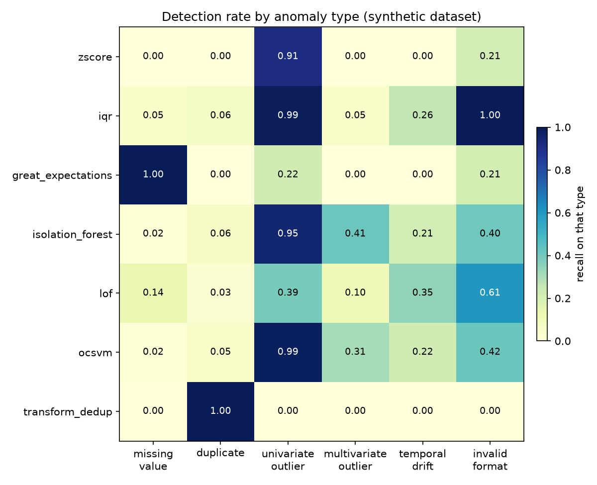

Anomaly detection for data quality, measured inside the ETL pipeline
Progress review. Rule-based and classical machine-learning detectors now run in one pipeline and are compared per anomaly type on a controlled dataset.
Does machine learning in an ETL pipeline detect anomalies better than plain rules, and for which kinds of anomaly?
Rules are the industry default. Declarative checks in tools like Great Expectations are auditable and cheap, but they only catch what the author anticipated.
The claim to test. Learned detectors should add coverage on anomalies that no fixed per-column rule describes, such as implausible combinations of otherwise normal values.
Deliverable of the thesis: a method by anomaly-type map that tells a practitioner which detector family to reach for, at what operational cost.
Format: IMRaD experimental paper, with a demo paper as the fallback if the M2 schedule slips.
Existing benchmarks measure algorithms in isolation and report one score per dataset
- ADBench, NeurIPS 202230 algorithms on 57 tabular datasets, the reference to extend rather than repeat. Evaluates outside any pipeline.
- Not covered: declarative rulesGreat Expectations and similar tools are never compared head to head with ML detectors.
- Not covered: pipeline integrationNo measurement of in-pipeline latency or where a detector can sit in the flow.
- Not covered: per anomaly typeAggregate scores hide that each detector family is good at a different kind of defect.
A controlled dataset with six labelled anomaly types, and a detection rate for every method on every type
Six categories are injected at a fixed rate into a base population of customer records generated with Faker and NumPy:
- missing values
- exact duplicates
- univariate outliers
- multivariate outliers, each field in range, the combination not
- temporal drift
- invalid formats
Because the category of every injected row is known, the benchmark reports a recall per type. That matrix is the paper's central figure and the part that is new relative to ADBench.
Detectors run inside a real pipeline, not on a bare matrix
Every detector implements the same fit / predict / score
interface, modelled on PyOD. The demo and the benchmark share the exact
detect() stage, so latency is measured on the real path.
A continuous score() was added so ROC-AUC and
PR-AUC are computable, not only threshold F1.
What is implemented today
Z-score, IQR (Tukey fences), Great Expectations suite (not-null plus per-column range at the 0.1 / 99.9 percentiles).
A per-column band. Differ in robustness and distributional assumption.
Isolation Forest, Local Outlier Factor, One-Class SVM, wrapped from PyOD. Numeric features, median imputation, standardized.
A joint model of the feature space.
Autoencoder, LSTM-Autoencoder. Scheduled for M2, kept behind the same interface.
One real and strongly imbalanced, one controlled by construction
- Credit Card Fraud, Kaggle283,726 transactions after dedup, 0.167% fraud. Real, heavily imbalanced, single binary label.
- Synthetic per type12,360 records, six anomaly types at 3% each, every bad row tagged with its category.
- UCI Water QualityPlanned for the summer, to test whether the per-type findings hold in another domain.
On real fraud data, rules recover most positives at a precision no one could deploy
| Detector | Prec. | Rec. | PR-AUC | Flag % | Time |
|---|---|---|---|---|---|
| Z-score | 0.011 | 0.899 | 0.090 | 13.4 | 0.2 s |
| IQR | 0.003 | 0.968 | 0.020 | 48.6 | 0.6 s |
| Great Expectations | 0.039 | 0.710 | 0.206 | 3.0 | 13.2 s |
A fixed rule cannot separate a 0.17% positive class from the tails of legitimate traffic. Great Expectations is the most selective and wins PR-AUC; it is also about 60 times slower than the statistical rules.
This gap is what the learned detectors are meant to close.
On the synthetic dataset, no single family dominates on aggregate metrics
| Method | Prec. | Rec. | F1 | PR-AUC | detect |
|---|---|---|---|---|---|
| rule-based | |||||
| Z-score | 1.000 | 0.188 | 0.316 | 0.540 | 0.00 s |
| IQR | 0.581 | 0.402 | 0.475 | 0.451 | 0.01 s |
| Great Expectations | 0.952 | 0.238 | 0.381 | 0.361 | 0.89 s |
| classical ML | |||||
| Isolation Forest | 0.599 | 0.343 | 0.436 | 0.505 | 0.53 s |
| LOF | 0.529 | 0.269 | 0.356 | 0.394 | 0.41 s |
| One-Class SVM | 0.583 | 0.334 | 0.425 | 0.512 | 9.83 s |
Read alone, these numbers would suggest the families are interchangeable. The per-type view shows they are not.
Each family has a spike; only the learned models cover multivariate outliers

Three findings from the build
- Great Expectations 1.x is a full API rewriteThe planning notes assumed the 0.18 API. Getting per-row failures out of GX 1.18 needs COMPLETE result format plus an explicit index column.
- One-Class SVM does not scale to pipeline dataTraining is quadratic. On the full fraud dataset it is impractical, so the cross-method comparison runs on the controlled dataset and a fitted sample.
- ML detectors are weak on missing valuesImputing before the model removes the signal a not-null rule catches for free. Rules and ML are complementary, not competing.
Latency is part of the comparison, because a detector has to sit in the flow
The statistical rules cost milliseconds. Great Expectations is roughly 60 times slower on the fraud dataset because it runs one pass per expectation. One-Class SVM is the slowest learned model at about 10 seconds on 12,000 rows.
Measured on the same detect() stage the demo
uses, so the numbers reflect the real pipeline path.
| Method | Fraud, full | Synthetic, 12k |
|---|---|---|
| Z-score | 0.2 s | 0.003 s |
| IQR | 0.6 s | 0.005 s |
| Great Expectations | 13.2 s | 0.9 s |
| Isolation Forest | — | 0.5 s |
| One-Class SVM | — | 9.8 s |
Where the repository stands
done ETL pipeline as composable stages
done Rule-based detectors and benchmark on Credit Card Fraud
done Isolation Forest, LOF, One-Class SVM via PyOD
done Synthetic six-type dataset and the method-by-type heatmap
next Autoencoder and LSTM-Autoencoder, M2
next UCI Water Quality as a third dataset
next Related Work section, bibliography checks
Reproducible: conda env, Makefile, pytest suite, versioned paper PDF, on GitHub.
The M2 plan
- Deep learningA plain Autoencoder first, then LSTM-Autoencoder, both behind the existing interface. Reconstruction error as the score.
- Third datasetUCI Water Quality, to check whether the per-type ranking generalises to another domain.
- Tune the operating pointSet each ML detector's contamination from the dataset prevalence instead of a fixed 0.10.
- Temporal driftThe one type nothing handles well. Add a detector that uses the signup timestamp explicitly.
- Write-upRelated Work, then Discussion and Conclusion around the heatmap.
Rules and machine learning are complementary by anomaly type, and the heatmap is what makes that choice actionable.
The pipeline, the six-type dataset, and the per-type benchmark are in place. Deep learning and a second real dataset are the remaining work for M2.